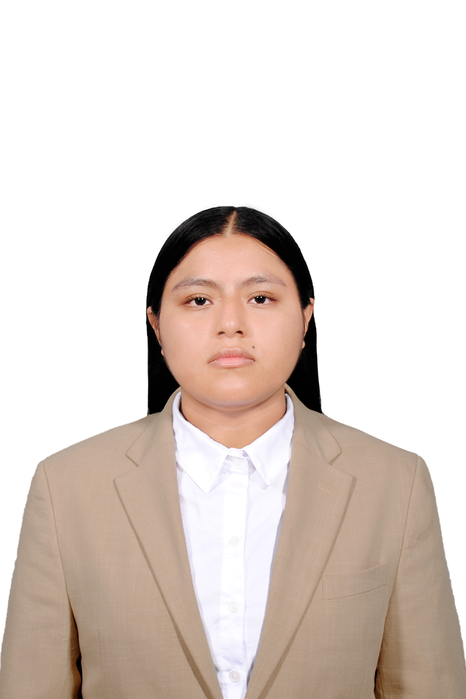

Desarrollador Full-Stack
Participé en el desarrollo de una aplicación web para Cancelaría Fuentes, relacionada con realidad aumentada y modelado 3D para instalaciones personalizadas de aluminio y vidrio.

Ingeniería en Entornos Virtuales y Negocios Digitales
Estudiante de Ingeniería en Entornos Virtuales y Negocios Digitales
Me interesa el desarrollo de aplicaciones web, la programación, los entornos virtuales y el diseño digital. En este espacio comparto mi formación, habilidades y proyectos académicos.
Estudiante de Ingeniería en Entornos Virtuales y Negocios Digitales con formación en programación, desarrollo web, bases de datos e inteligencia de negocios. He desarrollado proyectos de aplicaciones web, videojuegos 2D y 3D, programación para entornos virtuales, análisis y visualización de datos, así como proyectos de animación y experiencias digitales. Cuento con experiencia en proyectos colaborativos y aplicación de metodologías ágiles.
Mi objetivo es continuar desarrollando mis habilidades y participar en proyectos donde pueda combinar tecnología, creatividad y solución de problemas.
Herramientas y tecnologías que he utilizado durante mi formación y en proyectos académicos.
Proyectos realizados durante mi formación en la Universidad Tecnológica de Huejotzingo.
Participé en el desarrollo de una aplicación web para Cancelaría Fuentes, relacionada con realidad aumentada y modelado 3D para instalaciones personalizadas de aluminio y vidrio.
Ingeniería en Entornos Virtuales y Negocios Digitales
2026 – Presente
Técnico Superior Universitario en Entornos Virtuales y Negocios Digitales
2023 – 2025
Si deseas conocer más sobre mi formación o mis proyectos, puedes comunicarte conmigo por correo electrónico.